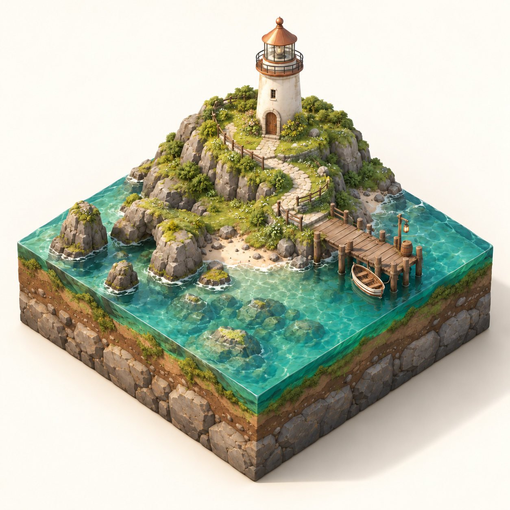

한영 프롬프트 작업실
한글 옵션을 고르면 영어 구현 요청문과 한글 뜻이 함께 바뀌는 도구. 실제 3D 구현은 코딩 AI에서 이어가기.
프롬프트 도구 열기 (새 탭)CLASSROOM / SHINGU UNIVERSITY
작은 섬을 코드로 만들고, 바다 색을 직접 바꿔 보기. 그 경험을 바탕으로 한글 선택을 영어 구현 요청문에 연결하는 도구 다듬기.
두 과목 모두 개인 작업 · 각 100분 기준

한글 옵션을 고르면 영어 구현 요청문과 한글 뜻이 함께 바뀌는 도구. 실제 3D 구현은 코딩 AI에서 이어가기.
프롬프트 도구 열기 (새 탭)실행 화면에서 형태와 반응을 살펴보는 수업용 예제. 전체 구현 프롬프트의 모든 기능을 완성한 결과로 간주하지 않기.
3D 예제 실행하기 (새 탭)01 / AI CONTENT SYSTEM DESIGN
참고 장면을 분석해 실행되는 3D 섬과 인터랙션 하나 만들기.
사실·추정·질문
전체 구상과 오늘 범위
실행·색 변경·비교
장면과 반응 하나
A/B와 변경 근거
검증과 자기 설명
전체 구현 프롬프트를 함께 읽고, 오늘 확인할 작은 범위를 분명하게 전달하기.
정지 이미지가 보이는 것, 단순 반복 파도가 있는 것, 실제 GPU 높이장 시뮬레이션이 작동하는 것은 서로 다른 결과. 구현·실행·측정한 범위를 나누어 기록하기.
02 / VIBE CODING
내 3D 장면을 비평하고, 한영 프롬프트 도구의 사본에서 개선 하나 완성하기.
현상과 개선 의도
입력·매핑·출력
선택 하나의 연동
작은 변경과 검증
두 언어·조건·사용성
실행 파일과 근거
대괄호를 자기 관찰로 바꾸고 예제 도구의 사본을 함께 제공하기.
‘블록 움직임 없음’을 고르면 고정 설명으로 바뀌고 젤리 강성 조절 요구는 사라져야 함. 수면의 마우스 파문과 자연파도는 별도 조건으로 확인. 도구의 문장이 맞는지와 실제 3D가 작동하는지는 따로 검증하기.
03 / FILES & HAND-IN
각자 자기 작업을 다시 열고, 실행 결과와 판단 근거를 함께 남기기.
AI콘텐츠는 프로젝트와 실행 방법, 바이브코딩은 원본·수정본 HTML. 필요한 파일과 사용 버전, 완료·미구현 구분.
선택 조건, 실제 사용한 프롬프트, 바꾼 부분과 유지 조건, A/B 화면과 최종 선택 이유.
직접 해본 조작, 기기와 화면 조건, 확인·미확인 항목, 입력이 화면 변화로 이어지는 흐름.
분석용 참고와 결과물에 포함한 자산의 출처·이용 조건을 구분. 해결하지 못한 문제 한 가지 기록.
| 항목 | 배점 | 확인할 근거 |
|---|---|---|
| 관찰의 구체성 | 25 | 장면·조작에서 직접 확인한 현상 |
| 명세의 명확성 | 20 | 의도·변경 범위·유지 조건 |
| 수정 근거와 비교 | 25 | 변경과 전후 결과의 관계 |
| 완성과 검증 | 15 | 선택한 기능의 실제 동작과 필요한 환경 확인 |
| 자신의 설명 | 15 | 작동 흐름·선택 이유·남은 문제 |
기능 수나 화면의 화려함에 자동 가산점 없음. 직접 확인한 범위와 학생 자신의 설명을 함께 평가.